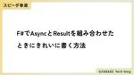

Uzabase for Engineers
https://tech.uzabase.com/
SPEEDA, NewsPicksなどを開発するユーザベースのTech Blog & エンジニア採用サイト
フィード

F#でAsyncとResultを組み合わせたときにきれいに書く方法
Uzabase for Engineers
スピーダ事業Product Teamのあやぴーです。 「関数型ドメインモデリング」が翻訳されて日本でもF#が流行る兆しが見えてきたので、今日はF#を書き始めた人が感じやすい違和感を解決する方法についての紹介です。尚、私たちProduct Team内では持っていない人はいないのではないか、と思う程度には購入している人が多い本です。 store.kadokawa.co.jp F#には async コンピュテーション式というものがあり、非同期処理をうまく書きやすいです。例えば、以下のようなコードです。 let asyncFunctionA () = async { return 42 } let a…
10時間前
NewsPicksの課金基盤を作り直した話 1
1
Uzabase for Engineers
NewsPicksの課金基盤を作り直した話です。オーソドックスな方法ですが、実際に自分の手で進めてみると、とても学びが多いプロジェクトでした。
2日前

Meet UB Tech #49「Figma Japan谷さんと、Config 2024について語ってみた」を公開しました
Uzabase for Engineers
こんにちは、Uzabaseの松並です。 ユーザベースのエンジニアカルチャーをゆるっとお伝えするPodcast、Meet UB Tech。 #49のテーマは、「Figma Japan谷さんと、Config 2024について語ってみた」です。 Figma社が2024年6月26日・27日（現地時間）にサンフランシスコで開催したカンファレンス「Config 2024」について、Figma Japan谷さん、同カンファレンスに現地参加したNewsPicksの鳥居さん・吉川さんにお話を伺いました。 open.spotify.com #49 の聞きどころはこちら。 タイトル： Figma Japan谷さんと…
15日前
CodeDeployで更新するECS ServiceをCDK管理して詰んだ話
Uzabase for Engineers
CodeDeployで更新するECS ServiceをCDK管理して失敗した話です。
18日前
Kotlin Fest 2024参加レポート
Uzabase for Engineers
ソーシャル経済メディア「NewsPicks」のMobileAppUnitの野口です。 開催日から日が経ってしまいましたが、先月22日(土)ベルサール渋谷ファーストで開催された、テックイベントKotlinFestに参加してきたのでそのレポートです。 （後半に一緒に参加した石井さんのレポートもあります） KotlinFestはその名前の通り、プログラミング言語のKotlinに関するカンファレンスで、6月22日に渋谷のベルサール渋谷ファーストで開催されました。 前回2022年から2年ぶり、オフライン開催は2019年以来5年ぶりということで、前回のオフライン開催の時に参加させていただき、すごく楽しかっ…
1ヶ月前
円安に負けない！共通バックエンドAPIサーバーARM対応プロジェクト
Uzabase for Engineers
こんにちは。ソーシャル経済メディア「NewsPicks」のSREチームの飯野です。 SREでは2023年から円安に負けないコスト削減を継続して行なっていますが、最近は圧倒的な円安におされ気味です。 2024年1月-6月の間に141→161円の変動はちょっと厳しすぎますよね。 今回は2024年1月から3月にかけて行なったNewsPicksの共通バックエンドAPIサーバーのARM対応プロジェクトについて話したいと思います。 ARM対応はコスト削減を目的とした施策です。適用範囲の見誤りがあり、当初の想定ほど大きなコスト削減は実現できませんでしたが、活発に変更が行われるプロダクトに段階的に変更を加えて…
1ヶ月前
Software Engineer(SWE)としてMachineLearning Engineer(MLE)の仕事をやってみた話
Uzabase for Engineers
はじめに きっかけ 何を開発しているか 機械学習の門外漢 機械学習とは ニューラルネットワークとは パーセプトロン 活性化関数 ニューラルネットワークの推論 配列の内積 numpy 推論 ニューラルネットワークの訓練 ロス関数 微分 誤差逆伝播法 全体的な処理イメージ まとめ はじめに みなさん、こんにちは！SaaS事業 Product Team の成です。 本日はSWEの経験しかない私が機械学習の開発仕事をやってみて学んだことや感想をシェアしたいと思います。機械学習の観点から見ると入門レベルの内容ですが、よろしくお願いします。 きっかけ 簡単な自己紹介をさせていただきます。エンジニア経歴は約…
1ヶ月前
ECSタスクの単発実行によるオンデマンド踏み台サーバーの実現
Uzabase for Engineers
前書き こんにちは！株式会社アルファドライブに所属していたくすのきです。 4月からは、アルファドライブの一部事業カーブアウトに伴い株式会社ユーザベース Holdings Productのエンジニアとしてユーザベースのすべての社員がより効率的に働ける環境づくりに邁進しています。 本稿は、アルファドライブで実施した「踏み台サーバーのオンデマンド化」についての紹介です。 インターンをしてくれたbe3さんが記事を書いてくれました。インターン期間後の寄稿となったため、共著という形で掲載します。 アルファドライブのご担当者に許可をいただき当時の構成を記載しています。 省コストな踏み台サーバーの構築に有益な…
2ヶ月前
1人プロジェクトで実感したチーム開発の良さ
Uzabase for Engineers
はじめに 1人プロジェクトとは？ 作ったもの 感じたこと おわりに はじめに こんにちは！ SaaS事業 Product Division Product Team の山室です。 私たち Product Team は普段チームで開発を行っていますが、5月は自分だけチームを離れて1人プロジェクトを行っていました。 今回は、その中で感じたことについて発信したいと思います！ 1人プロジェクトとは？ 1人プロジェクトとは、技術力の向上を目的として、いまある課題を解決することができるシステムを1ヶ月以内にゼロから作る、という取り組みです。 この取り組みには、1人で 0 → 1 の開発をすることでしか得ら…
2ヶ月前
Pythonスクリプトのモジュラリティとポータビリティを高めていく
Uzabase for Engineers
はじめに PoCで使用したスクリプトのサンプル 小さなPythonスクリプト evaluate.py 共通の工夫：入出力の扱い 入力の扱いの工夫 出力の扱いの工夫 jsonl_to_csv.py つなげるシェルスクリプト ポータビリティの高いPythonパッケージ管理方法 PEP 723 – Inline script metadata inline script metadataとは pipxはinline script metadataのdependenciesをサポート まとめ We are hiring!!! はじめに こんにちは！ 株式会社ユーザベース SaaS Product Te…
2ヶ月前
Search Engineering Tech Talk 2024 Springに登壇しました
Uzabase for Engineers
こんにちは。ソーシャル経済メディア「NewsPicks」で検索システムを開発しております崔（ちぇ）です。 Search Engineering Tech Talk 2024 Springに登壇し、「検索失敗率のモニタリングから改善まで」というテーマで発表しました。 search-tech.connpass.com Search Engineering Tech Talk（検索技術勉強会）は、検索エンジンそのものよりも検索自体や検索システムにまつわる技術や手法を共有する勉強会です。 発表 「検索失敗率モニタリング」は、2021年末頃から本格的に始めた施策で、今も続いています。 NewsPicks…
2ヶ月前
手動作成AWSリソースをIaC化するモブプロ「cdk import day」を定期開催している話
Uzabase for Engineers
はじめに 「私…全ての手動作成AWSリソースを生まれる前に消し去りたい。全ての宇宙、過去と未来の全ての手動作成AWSリソースを…この手で！」 そんなことを思われた経験はないでしょうか？私は常に思っています。 こんにちは。ソーシャル経済メディア「NewsPicks」のSREチームの安藤です。 先日の JAWS-UG CDK支部 #14 にて、テーマが「IaC Generator祭り」だったこともあり、以下のタイトルでLT発表させていただきました。 www.docswell.com 上記の発表はAWS CDKのコミュニティのライトニングトークということもあり簡単なTIPS紹介が中心だったので、本記…
2ヶ月前
人工知能学会JSAI2024でスポンサーと発表をしました
Uzabase for Engineers
UB Researchの高山です。 先日開催された人工知能学会JSAI2024に株式会社ユーザベースとして参加してきました。 UB Researchは「あらゆるデータを”活きた経済情報”として利用可能にするAI研究所」として去年から活動しており、人工知能学会は去年に引き続き2回目のスポンサー&参加となります。企業研究所としての研究アウトプットを継続的に出すことは目標の一つとして掲げていますので、スポンサーブースだけではなく発表もできたことを光栄に思っています。 UZABASEスポンサーブース 弊社のリサーチャーである田村と野中がポスターセッションをおこないました。 それぞれ以下のページで公開さ…
2ヶ月前
Playwrightを使ったE2Eテストを導入した話 - インフラ編 Playwright × Allure Report × AWS
Uzabase for Engineers
はじめに こんにちは。ソーシャル経済メディア「NewsPicks」の QA/SET チームの海老澤です。 先日は Playwright を使ったE2Eテストの導入について、紹介させていただきました。 今回は作成したテストをAWS 基盤上で動かす方法を紹介させていただきます。 前回の記事 tech.uzabase.com E2Eテスト実行のタイミング NewsPicksでは 下記のタイミングで E2Eテストを実行させています。 ①リリース時のカナリーデプロイ後 NewsPicks ではカナリーリリースを採用していてカナリーへのデプロイが完了した後、カナリーに向けてE2Eテストが動きます。 ②開発…
2ヶ月前
Meet UB Tech #48「ユーザベース SaaS Product Teamのペアプロの実態と組織文化に迫る」を公開しました
Uzabase for Engineers
こんにちは、Uzabaseの松並です。 ユーザベースのエンジニアカルチャーをゆるっとお伝えするPodcast、Meet UB Tech。 #48のテーマは、「ユーザベース SaaS Product Teamのペアプロの実態と組織文化に迫る」です。 今回のPodcastでは、ユーザベース SaaS Product Teamの阿久津さん・横山さんにお越しいただき、お話を伺いました！ open.spotify.com #48 の聞きどころはこちら。 タイトル： ユーザベース SaaS Product Teamのペアプロの実態と組織文化に迫る 出演者： 阿久津 優輔 @__u5k_4（ユーザベース S…
2ヶ月前
Next.js の Parallel Routes に入門したらユーザー体験に関する悩みが良い意味で増えた話
Uzabase for Engineers
はじめに こんにちは。ソーシャル経済メディア「NewsPicks」の NewsPicks Stage. チームの三嶋です。 普段は、NewsPicks Stage. という経済情報に特化したオンライン番組配信プラットフォームの開発をしています。 NewsPicks Stage. チームでは、昨年末からフロントエンドのアプリケーションで Next.js の App Router を使い始めています。 今回は、Next.js の Parallel Routes を使った際の気づきを共有させてください。 Parallel Routes とは 詳細は公式を参照ください。 端的には、複数のページを1つの…
2ヶ月前
Flexbox内でのテキスト省略の謎を解く
Uzabase for Engineers
はじめに こんにちは！株式会社ユーザベース SaaS事業 Product Team の沖です。 この記事では、私がプロダクト開発中に遭遇した問題とその解決方法について共有します。具体的には、Flexbox 内の要素にカードのタイトルが「…」で省略される仕様を追加した際の課題に焦点を当てます。解決までの道のりを、レイアウト例を用いて説明していきます。この記事が、同様の問題に直面している方の参考になれば幸いです。 仕様を追加する前の画面の説明 仕様を追加する前の画面は、以下のようなレイアウトになっています。 ページ全体はヘッダー、サイドバー、コンテンツ領域で構成されています サイドバーとコンテンツ…
3ヶ月前
エンジニア従業員エンゲージメント向上への道
Uzabase for Engineers
はじめに こんにちは！NewsPicksのVP Of Mobile Engineeringの石井です。 約1年前にPharmaXさん主催の「事例で学ぶ！エンジニア組織文化を作る採用・評価の仕組み」というイベントでPharmaX 取締役・エンジニアリング責任者の上野さん、カオナビCTOの松下さんと私の3人で事例発表やパネルディスカッションをしました。（そのときの記事は、PharmaXさんのこちらの記事にあります） このときに私が話したエンゲージメントに関することは、「採用とオンボーディングを頑張った結果、エンゲージメントもよくなりました」的な話もしました。 ただ、それ以外にも多くのことをしていま…
3ヶ月前
チームから離れて1人1ヶ月でシステムを作る1人PJという取り組み
Uzabase for Engineers
はじめに こんにちは！Product Teamの渡邉臣(@Sicut_study)です。 今回はProduct Teamで特徴的な取り組みの1つである「1人プロジェクト」について実際に体験したので紹介します。 1人プロジェクトを通して、この1年間での成長を実感できたのでぜひ多くの方に知ってほしいです。 1人プロジェクトとは？ Product Teamには色々ユニークな取り組みがあるのですが、その1つが「1人プロジェクト」です。 エンジニアである以上、技術力が大事です。 日々の業務の中でも成長する環境は整っていますが、例えばパイプラインを1人で構築できる機会が訪れなかったなど特定の技術に触れられ…
3ヶ月前
AWS Security HubとSlackを利用して、セキュリティ状況の監視運用を効率化したお話
Uzabase for Engineers
はじめに 初めまして！ソーシャル経済メディア「NewsPicks」SREチーム・新卒エンジニアの樋渡です。今回は「AWS Security Hub」と「Slack」を用いて、弊社で利用しているAWSリソースの監視運用を効率化したお話です。 お話の内容 年々増加するサイバー攻撃に対抗するため、セキュリティ対策は日々重要度が増してきています。 そこで弊社で利用しているAWSのリソースに対して、各種セキュリティイベントの収集ができるAWS Security Hubを利用することで、セキュリティ状態の可視化と迅速な対応がしやすい運用を行い、セキュリティ状態の現状把握から始めることにしました。特にNIS…
3ヶ月前
技術選定の裏側を大公開！なぜ Rust/Go/F#/Python/Rubyは選ばれたのか？
Uzabase for Engineers
UBTechは、ユーザベースのエンジニアが定期的に開催しているテックイベントです。 UBTech#16では、「技術選定の裏側を大公開！なぜ Rust/Go/F#/Python/Rubyは選ばれたのか？」というテーマで、ユーザベースのプロダクトで使用されている様々な技術について、言語に絞り、それぞれの特徴や良いところ・伸び代等を実際に業務で使用している5人のエンジニアに語ってもらいました。 アーカイブ動画は、以下からご覧ください。 記事を見る
3ヶ月前
Playwrightを使ったE2Eテストを導入した話
Uzabase for Engineers
はじめに こんにちは。ソーシャル経済メディア「NewsPicks」の QA/SET チームの海老澤です。 先日 弊社で E2E テスト実行するために Playwright を導入したため紹介させてください。 E2Eテストとは E2Eテスト（エンドツーエンドテスト）とは、ソフトウェア開発におけるテスト手法の一つで、アプリケーションが実際の運用環境と同様の条件下で正しく動作することを確認するためのテストです。 システムの開始点から終了点までを通じて、ユーザーの視点でアプリケーションのフローを追い、機能全体が連携して期待通りに動くかを検証します。具体的には、ユーザーが行うであろう一連の操作をシミュレ…
3ヶ月前
Meet UB Tech #47「NewsPicksプロダクトチームの新しいカンファレンス参加支援制度 “Kaigi Pass” の実態に迫る」を公開しました
Uzabase for Engineers
こんにちは、Uzabaseの松並です。 ユーザベースのエンジニアカルチャーをゆるっとお伝えするPodcast、Meet UB Tech。 #47のテーマは、「NewsPicksプロダクトチームの新しいカンファレンス参加支援制度 “Kaigi Pass” の実態に迫る」です。 もともとエンジニア向けの制度が比較的充実しているNewsPicksプロダクトチームですが、今回新たにカンファレンス参加に際して必要となる費用を会社が一部負担する制度 “Kaigi Pass” が新設されました。 今回のPodcastでは、その制度設計・導入をリードしたNewsPicks CTO／CPOの文字さんと、“Kai…
4ヶ月前
設計って技術的にも大変だけど組織的な大変さもあるよねという話
Uzabase for Engineers
Product Team の竹原です。 みなさん、ドメインのモデリングしてますか？ 最近私たちのチームでは以下のプレスリリースにある機能の開発に勤しんでいます。 FORCAS、生成AIを活用した新機能「AIセールストーク自動生成」の実証実験を開始 | FORCAS（フォーカス）｜営業DXソリューション｜企業データベースと顧客分析 その開発において、ドメインの理解をしっかり深めないまま開発を続けたためにちょっとつまづいてしまったので、反省も兼ねて記事にまとめてみることにしました。 ドメインの概要 上記のAIセールストーク自動生成機能には以下の図のように、 課題に悩む企業 自社のプロダクトをおすす…
4ヶ月前
英語が苦手でも国際カンファレンスに行ってみよう！ 〜 DevOpsDays Tokyo 2024 参加レポート
Uzabase for Engineers
ソーシャル経済メディア「NewsPicks」でエンジニアをしております小林です。 弊社の「Kaigi Pass」というカンファレンス参加費用をサポートしてもらえる制度が今年から始まりました！ せっかくなのでそちらの制度を利用して、2024年4月16、17日に開催された国際カンファレンスの DevOpsDays Tokyo 2024 に参加してきました！（スポンサー関係者含めた総参加者は324名の規模感） 実はテックカンファレンス初参加です！本記事では参加レポートをお届けします。 #DevOpsDaysTokyo 2024、遂に明日から開催です！Day1のキーノートはDevOpsDaysの発起人…
4ヶ月前
Spring Security を使って独自の認可処理を実装した話
Uzabase for Engineers
はじめに 皆さんこんにちは、株式会社ユーザベース SaaS事業の本谷です。今回はタイトルにある通り、Spring Security を使った独自の認可処理の実装方法について概要を紹介しようと思います。 Spring Security は認可に関する標準の実装が提供されており、一般的な認可処理を実現することは簡単です。例えばユーザごとに権限を持たせ、情報へのアクセスを許可または拒否することは多くのコードを書くことなく実現できます。一方、独自の実装をConfigクラスを使って設定することで、自由度の高い認可処理を実現することができ、より複雑な要件に対応できます。 今回、アプリケーションの要件は権限…
4ヶ月前
インターンでRAGシステムの検索エンジンの改善をおこないました
Uzabase for Engineers
UB Researchチームで2週間の短期インターンをしている梶川です。 現在、UB ResearchではRAGシステム構築に向けた研究を行っており、社内のさまざまなデータを正確に拾い上げるための検索エンジンの開発と評価を行っています。 今回、その検索エンジンに代わるモデルを用いて、実際の検索テキストで検索を実施した結果を報告します。 概要 近年、LLMを用いた文書生成が流行しており、その中でも外部情報を検索し、LLMに追加して生成させるRAGという技術が活用されています。RAGによって、LLMが知らない情報に対して正確な応答を返すことができ、UB Researchでもニュース記事や有価証券報…
4ヶ月前
なぜCDKを使う「べき」なのだろう?
Uzabase for Engineers
はじめに 皆様こんにちは、ソーシャル経済メディア「NewsPicks」(Media Infrastructureチーム)エンジニアの北見です。 現在、私は弊社サービスの一部のインフラ刷新を行なっている最中で、ここ数ヶ月 AWS CDKを触っておりました。 前職では Infrastructure as Code として Terraform を使ったことがあるのですが、少なくともAWS を使うという条件においては CDKを使うべき という結論に辿り着きました。 今回はそのように考えるようになった理由について説明していこうと思います。 前提 Terraform はパブリッククラウドにおける Infr…
4ヶ月前
ECS on Fargate 1.4.0で「ResourceInitializationError」を解決する方法
Uzabase for Engineers
こんにちは。ソーシャル経済メディア「NewsPicks」で検索システムを開発しております崔（ちぇ）です。 弊社の検索システムはAWS EC2（Elastic Compute Cloud、以下、EC2）で動いていました。それを昨年、Amazon ECS（Elastic Container Service、以下、ECS）に移行しました。前回のブログでは、移行のために調べた「アプリケーションをコンテナ化するベストプラクティス」をまとめましたので、ご興味ある方は読んでいただけると嬉しいです。 tech.uzabase.com 今日は、ECS on Fargateのタスク起動に手こずった話をしてみようと…
4ヶ月前
try! Swift Tokyo 2024に参加してきました！
Uzabase for Engineers
ソーシャル経済メディア「NewsPicks」でiOSエンジニアをしている金子です。 世界中のiOSエンジニアが集う国際カンファレンス try! Swift Tokyo 2024 に参加してきました！ tryswift.jp 弊社のNewsPicksアプリで採用しているTCA（The Composable Architecture）の作者であるPoint-Freeのお二人が来日されるということもあり、これは行かない理由がない！と社内で手を上げて、行かせていただきました。 本記事ではtry! Swift Tokyo 2024参加レポートをお届けします。 Kaigi Pass 一日中楽しめる Swi…
4ヶ月前